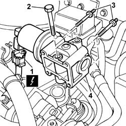
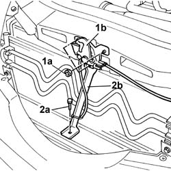
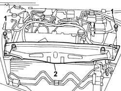
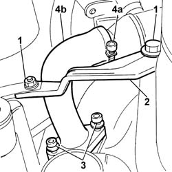
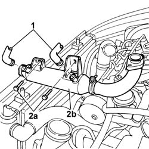

1080C80 Water/exhaust gas heat exchanger for E.G.R. system - R.R.
- Path
- Procedures > 10 ENGINE > 1080 EMISSION CONTROL SYSTEM > 1080C MOTOR FOR EGR VALVE SELF-ADJUSTMENT - R.R. > 1080C80 Water/exhaust gas heat exchanger for E.G.R. system - R.R.
- Kind
- repair procedure (removal / refitting; the operation number is the code)
- Applies to
- engines: 2.4 JTD 20V; all production periods
- Interactive page
- https://sloeber94.github.io/elrnDB-lThss/en/#/851218
Applies to: engines: 2.4 JTD 20V; all production periods
 Removing
Removing
 Refitting
RefittingSee in Op. 7055B54 PROTECTION/GUARD under engine - R.R.
- Lower the vehicle.
See in Op. 7040D50 ENGINE COMPARTMENT UPPER SOUND INSULATION SHIELD - R.R.
See in Op. 1016A10 SOUND-PROOFING COVER - R.R.
See in Op. 1048B44 RIGID air supply PIPE from heat exchanger to intake manifold - R.R.
See in Op. 1048A56 UPPER RESONATOR - R.R.
See in Op. 1048A50 air inlet pipe to turbocharger - r + r
1. Disconnect the EGR electrical connection.
 | Description | Connector |
|---|---|---|
1 | EGR solenoid valve | L030 |
2. Undo the bolts securing the EGR pipe to the heat exchanger.
3. Undo the bolts fixing the EGR valve to the intake manifold.
4. Remove the EGR solenoid valve.
- Recover the underlying gasket.

Applies to: engines: 2.4 JTD 20V; all production periods
1. Undo the fixing nuts (1a) and remove the bonnet lock (1b) from the housing in the crossmember.
2. Undo the lower nut (2a) and remove the lock reinforcement bracket (2b).

Applies to: engines: 2.4 JTD 20V; all production periods
1. Undo the retaining bolts.
2. Remove the upper front crossmember.

Applies to: engines: 2.4 JTD 20V; all production periods
1. Undo the nut and the bolt.
2. Remove the heat exchanger rigid oil supply and return pipe mounting bracket.
3. Undo the bolts fixing the E.G.R. system water/exhaust gas heat exchanger exhaust gas inlet pipe from the exhaust manifold.
4. Loosen the band (4a) and remove the E.G.R. system water/exhaust gas exhaust gas inlet pipe (4b).

Applies to: engines: 2.4 JTD 20V; all production periods
- Lower the lift.
1. Disconnect the two engine coolant pipes from the water/exhaust gas heat exchanger.
2. Undo the bolts (2a) and remove the water/exhaust gas heat exchanger for the E.G.R. system (2b).

Applies to: engines: 2.4 JTD 20V; all production periods
Refitting
Removing- Fit the E.G.R. system water/exhaust gas heat exchanger and secure it to the cylinder head using the bolts.
- Connect the two engine coolant pipes to the water/exhaust gas heat exchanger.
- Fit the E.G.R. system water/exhaust gas heat exchanger exhaust gas inlet pipe and tighten the fastening band.
- Tighten the bolts fixing the E.G.R. system water/exhaust gas heat exchanger exhaust gas inlet pipe to the exhaust manifold to the recommended torque.
- Fit the heat exchanger rigid oil supply and return pipe mounting bracket and tighten the bolt and the nut to torque.
- Fit the upper front crossmember and tighten the fixing bolts to torque.
 | Value - daNm | Fastening | Component | Ø |
|---|---|---|---|---|
. | 0.6 | Bolts | FRONT WING CROSSMEMBER HEADLAMP HOUSINGS | M6 |
- Fit the bonnet lid lock complete with bracket and tighten the nuts fixing it to the upper crossmember and to the lower crossmember.
- Fit the E.G.R. system solenoid valve complete with seal and secure it tightening the bolts to the recommended torque.
- Tighten the bolts fixing the exhaust gas recirculation pipe to the EGR solenoid valve to torque.
- Connect the EGR electrical connection.
| Description | Connector |
|---|---|---|
. | EGR solenoid valve | L030 |
See in Op. 1048A50 air inlet pipe to turbocharger - r + r
See in Op. 1048A56 UPPER RESONATOR - R.R.
See in Op. 1048B44 RIGID air supply PIPE from heat exchanger to intake manifold - R.R.
See in Op. 1016A10 SOUND-PROOFING COVER - R.R.
See in Op. 7040D50 ENGINE COMPARTMENT UPPER SOUND INSULATION SHIELD - R.R.
- Raise the vehicle.